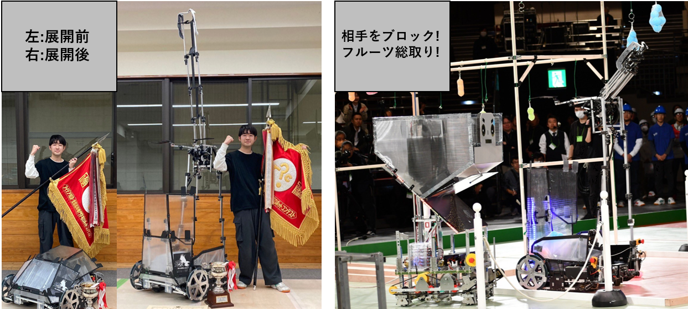
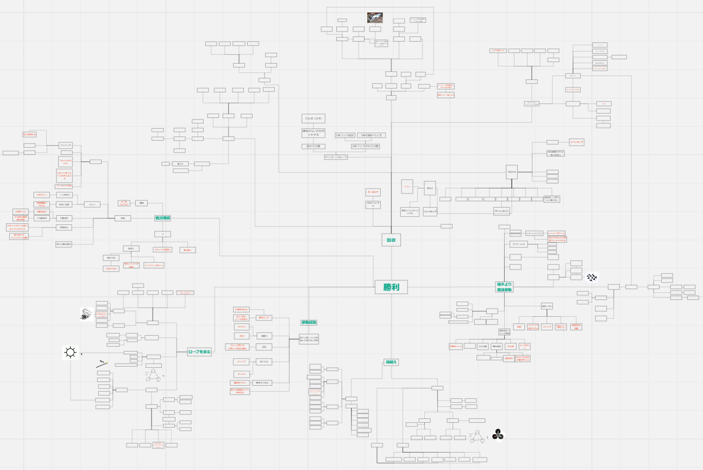
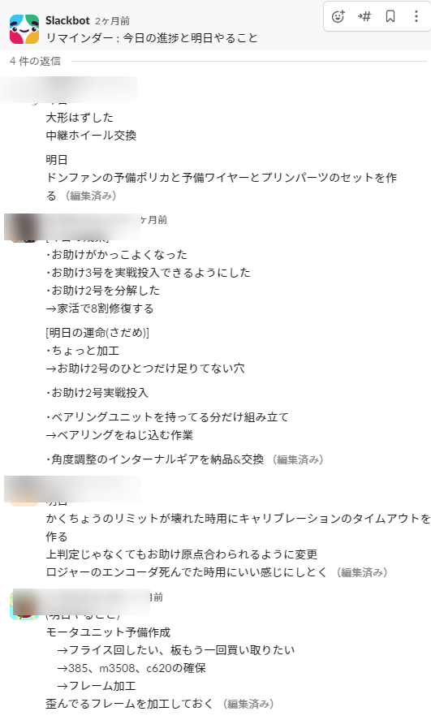
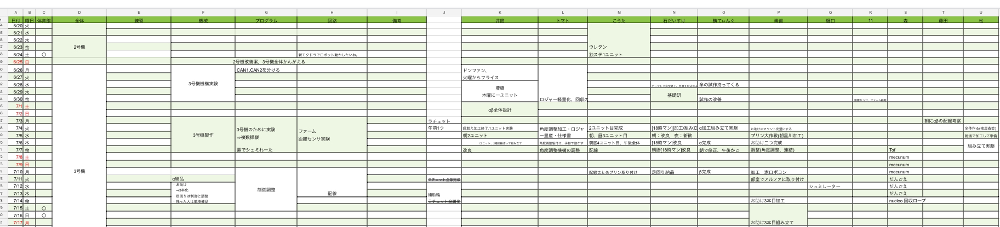

定めた方針に従い各技術者と個人個人で相談し要件定義及び製作するものを決めました。
定めた方針に従い各技術者と個人個人で相談し要件定義及び製作するものを決めました。
高専ロボコン2023のルールは「もぎもぎ!フルーツGOラウンド」。障害物競争とパン食い競争を組み合わせたような競技です。 周回型コースに設置された段差や垂れ下がったロープを越え、得点源となる高い位置に設置されたフルーツを獲得します。 高得点フルーツゾーンに侵入するには1周以上コースを周回する必要があります。 相手との共有フィールドのため、戦略もカギとなってきます。 ルール発表から大会までの半年間で全国のロボコン参加者同士本気で制作にあたります。
半年間でどの高専よりも優れたロボットを製作するために、年間の方針決めを重要視しました。
優勝を目標に掲げそれを達成するためのプロセスを以下のように考えていました。
定めた方針に従い各技術者と個人個人で相談し要件定義及び製作するものを決めました。
大会最速の周回タイムを実現し、最も早く高得点ゾーンへ侵入できます。 移動時は重心・障害物との兼ね合いでロボットは小さく折りたたんでいますが、 フルーツ回収時は約10倍の3mまで展開します。 自由度の高いアームを搭載しており、高得点ゾーンに相手が侵入しないようブロックしながらフルーツを総取りできます。

チーム活動をする上で効率化を図るため以下の事を行いました。
・勝利への道筋を常にメンバーと相談、共有
・定めた道筋を最短で走り抜けるために、PDCAのスパンを短くする
まずは、道筋を明確にするために大きい目標から実際に思いつくアイデアに向けて少しずつ具体性を挙げ、全て列挙しました。
この結果より最適解を見つけそれを達成するための方法などを「コンセプト」として言語化しました。
詳細な樹形図

次にPDCAを早いスパンで回す目的で毎日チームメンバー一人一人の進捗状況及び明日のやることを確認していました。 これによりチーム全員にタスクを適切に分散、問題点の迅速な情報伝達ができました。 機械・制御・回路それぞれの分野に特化したチームメンバー12名に進捗を記入、その後私がそれぞれの記入者に詳細を聞き情報伝達してもらいました。 高スパンでPDCAを回すことができたため半年間で800mm四方のロボットを11台作ることができました。
大きなロボットを作るため、他人のタスクと干渉し作業効率が下がるリスクを減らすため一人一人のスケジュールを立てていました。 全体から個人へ少しずつ具体性を上げ全てを記入しました。
実際の競技の様子 赤コートで大阪公大と表記されています。
topに戻る